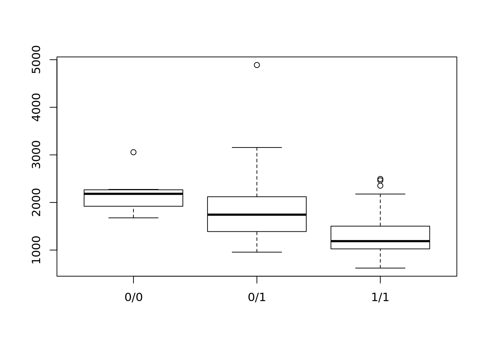

## [1] "Genotypes" "gEUVADIS"
## [3] "gonl-snps-indels-release-5" "gonl-snv-release-5.4"
## [5] "GWAS_ImputationGoNLv5" "HRC_Imputation"
## [7] "HRCv1.1_Imputation" "IlluminaHumanMethylation450k"
## [9] "Phenotypes" "README"
## [11] "reference" "RNASeq"
## [13] "rp3_rp4_meta" "RP4"## [1] "HRC_Imputation"vcfs <- dir(file.path(VM_BASE_DATA, "HRC_Imputation",
"CODAM"), pattern = "filtered.dose.vcf.gz$", full.names = TRUE,
recursive = TRUE)
vcfs## [1] "/home/dcats/researchdrive/RSC_BIOS/RP3_data//HRC_Imputation/CODAM/results/unzipped/chr1.filtered.dose.vcf.gz"
## [2] "/home/dcats/researchdrive/RSC_BIOS/RP3_data//HRC_Imputation/CODAM/results/unzipped/chr10.filtered.dose.vcf.gz"
## [3] "/home/dcats/researchdrive/RSC_BIOS/RP3_data//HRC_Imputation/CODAM/results/unzipped/chr11.filtered.dose.vcf.gz"
## [4] "/home/dcats/researchdrive/RSC_BIOS/RP3_data//HRC_Imputation/CODAM/results/unzipped/chr12.filtered.dose.vcf.gz"
## [5] "/home/dcats/researchdrive/RSC_BIOS/RP3_data//HRC_Imputation/CODAM/results/unzipped/chr13.filtered.dose.vcf.gz"
## [6] "/home/dcats/researchdrive/RSC_BIOS/RP3_data//HRC_Imputation/CODAM/results/unzipped/chr14.filtered.dose.vcf.gz"
## [7] "/home/dcats/researchdrive/RSC_BIOS/RP3_data//HRC_Imputation/CODAM/results/unzipped/chr15.filtered.dose.vcf.gz"
## [8] "/home/dcats/researchdrive/RSC_BIOS/RP3_data//HRC_Imputation/CODAM/results/unzipped/chr16.filtered.dose.vcf.gz"
## [9] "/home/dcats/researchdrive/RSC_BIOS/RP3_data//HRC_Imputation/CODAM/results/unzipped/chr17.filtered.dose.vcf.gz"
## [10] "/home/dcats/researchdrive/RSC_BIOS/RP3_data//HRC_Imputation/CODAM/results/unzipped/chr18.filtered.dose.vcf.gz"
## [11] "/home/dcats/researchdrive/RSC_BIOS/RP3_data//HRC_Imputation/CODAM/results/unzipped/chr19.filtered.dose.vcf.gz"
## [12] "/home/dcats/researchdrive/RSC_BIOS/RP3_data//HRC_Imputation/CODAM/results/unzipped/chr2.filtered.dose.vcf.gz"
## [13] "/home/dcats/researchdrive/RSC_BIOS/RP3_data//HRC_Imputation/CODAM/results/unzipped/chr20.filtered.dose.vcf.gz"
## [14] "/home/dcats/researchdrive/RSC_BIOS/RP3_data//HRC_Imputation/CODAM/results/unzipped/chr21.filtered.dose.vcf.gz"
## [15] "/home/dcats/researchdrive/RSC_BIOS/RP3_data//HRC_Imputation/CODAM/results/unzipped/chr22.filtered.dose.vcf.gz"
## [16] "/home/dcats/researchdrive/RSC_BIOS/RP3_data//HRC_Imputation/CODAM/results/unzipped/chr3.filtered.dose.vcf.gz"
## [17] "/home/dcats/researchdrive/RSC_BIOS/RP3_data//HRC_Imputation/CODAM/results/unzipped/chr4.filtered.dose.vcf.gz"
## [18] "/home/dcats/researchdrive/RSC_BIOS/RP3_data//HRC_Imputation/CODAM/results/unzipped/chr5.filtered.dose.vcf.gz"
## [19] "/home/dcats/researchdrive/RSC_BIOS/RP3_data//HRC_Imputation/CODAM/results/unzipped/chr6.filtered.dose.vcf.gz"
## [20] "/home/dcats/researchdrive/RSC_BIOS/RP3_data//HRC_Imputation/CODAM/results/unzipped/chr7.filtered.dose.vcf.gz"
## [21] "/home/dcats/researchdrive/RSC_BIOS/RP3_data//HRC_Imputation/CODAM/results/unzipped/chr8.filtered.dose.vcf.gz"
## [22] "/home/dcats/researchdrive/RSC_BIOS/RP3_data//HRC_Imputation/CODAM/results/unzipped/chr9.filtered.dose.vcf.gz"VariantAnnotationExample eQTL from Zhernakova et al. (Zhernakova et al. 2017) (see Figure 2: Identification of the strongest modifiers of eQTL effects).
## Warning: snpid2grange() is deprecated. Please use snpsById() instead.seqlevels(gr) <- gsub("ch", "", seqlevels(gr))
genome(gr) <- "hg19"
from <- vcfs[grepl("chr16", vcfs)]
to <- tempfile()
library(VariantAnnotation)##
## Attaching package: 'VariantAnnotation'## The following object is masked from 'package:base':
##
## tabulatezipped <- bgzip(from, to)
fl <- indexTabix(zipped, format="vcf")
vcf <- readVcf(fl, genome="hg19", param=gr)
rs1981760 <- geno(vcf)$GT[1,]bbmri.data(rnaSeqData_ReadCounts_CODAM_Freeze2_unrelated)
hrc <- intersect(names(rs1981760), counts$imputation_id_hrc)
counts <- counts[,counts$imputation_id_hrc %in% hrc]
mid <- match(counts$imputation_id_hrc, names(rs1981760))
rs1981760 <- rs1981760[mid]
cnts <- assays(counts)$data
dim(cnts)## [1] 56515 184
getGenotypesReplace this with the
MatrixeQTLexample from Rick/Joost?
## Warning: snpid2grange() is deprecated. Please use snpsById() instead.bbmri.data(rnaSeqData_ReadCounts_BIOS_Freeze2_unrelated)
counts <- counts[,!is.na(counts$imputation_id_hrc)] ##not all samples have genotype data
library(BiocParallel)
register(MulticoreParam(2, log=TRUE))
dosages <- getGenotypes(imputation_id = counts$imputation_id_hrc, biobank="ALL", snps=gr, type="HRC", geno="DS", BASE=VM_BASE_DATA)
dosages[1:2, 1:5]## 1_LLDeep_1260 1_LLDeep_1022 1_LLDeep_1270 1_LLDeep_0106
## 16:50719103 2 2 2 1
## 16:50723074 2 2 2 1
## 1_LLDeep_0157
## 16:50719103 2
## 16:50723074 2## [1] 56515 3357## [1] 2 3357## [1] "1_LLDeep_1260" "1_LLDeep_1022" "1_LLDeep_1270" "1_LLDeep_0106"
## [5] "1_LLDeep_0157" "1_LLDeep_1040"## [1] "1_LLDeep_1260" "1_LLDeep_1022" "1_LLDeep_1270" "1_LLDeep_0106"
## [5] "1_LLDeep_0157" "1_LLDeep_1040"## Removing 2967 rows with all zero countsy <- calcNormFactors(y) ##use edgeR's TMM normalization
y <- cpm(y, log=TRUE)
library(limma)
fit <- lmFit(y, dosages[1,]) ##run for 1 SNP
tstat <- fit$coef/fit$stdev.unscaled/fit$sigma
pval <- 2 * pnorm(-abs(tstat[,1]))
head(sort(pval, decreasing=FALSE))## ENSG00000000003 ENSG00000000005 ENSG00000000419 ENSG00000000457 ENSG00000000460
## 0 0 0 0 0
## ENSG00000000938
## 0Zhernakova, D. V., P. Deelen, M. Vermaat, M. van Iterson, M. van Galen, W. Arindrarto, P. van ’t Hof, et al. 2017. “Identification of context-dependent expression quantitative trait loci in whole blood.” Nat. Genet. 49 (1): 139–45.